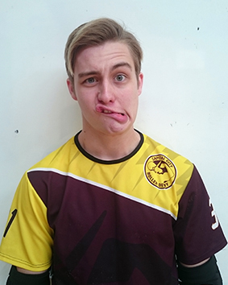
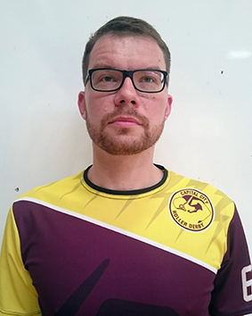
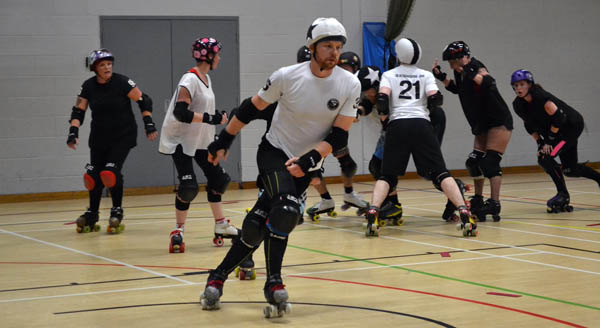
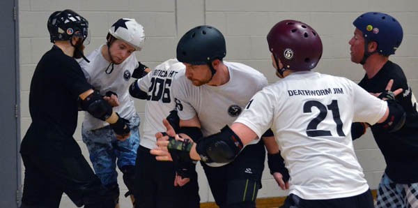

Capital City's new faces for their upcoming bout
As Capital City's next game and the final game of 2015's Scottish Men's Roller Derby Nationals (SMRDN) against Mean City creeps ever closer we would like you all to find out a little more about two new faces that will be on track that day, so we asked them a few questions. Mad Science and Darth Evader will be making their Scottish debut at the game for Capital City, although this is not Mad Science's first game. He traveled down south with Capital City a couple of Months ago when they went to play Manchester's Chaos Engine, but this will be his first game in Scotland.
 Darth Evader #54
 Mad Science #36
Mad Science #36 (MS) Darth Evader #54 (DE)How did you find out about Derby and CCRD? DE: I discovered derby through my girlfriend who was making a short documentary on roller derby. I found out about CCRD by looking online for men’s roller derby teams in Edinburgh and there they were! MS: Through my flatmate who is also a member of the team. I joined because I wanted to learn to skate but quickly fell in love with derby.
Having not skated previously how did you find working towards and passing your mins? DE: I found them to be a mix of easy and hard tasks. Some of the mins just clicked and others took a while to get the hang of but they were always the most rewarding mins to tick off. MS: Mins gave me a well-structured set of basic skating skills to work on and allowed me to measure my progress. During training my teammates would share their insights and offer valuable feedback but in skating everyone has their own technique and part of the process was figuring out my way of doing things. A lot of it is muscle memory so repetition is the key. Passing mins gave me the confidence that I can skate well enough to play without hurting myself or anyone else.
 Mad Science and Darth Evader - Picture by V.L. Tickle
Mad Science and Darth Evader - Picture by V.L. Tickle
What would you say has been your biggest achievement so far in derby? DE: Learning to do crossovers has to have been the most rewarding thing I’ve ever learned to do. I’d seen loads of skaters do it and couldn’t wait to learn myself and once I did I felt pretty damn good about myself! MS: Being part of the team. Growing up as a gay kid and a big nerd, not only did I dislike sports but had particularly hard time playing in a team. In roller derby I learn to anticipate my team’s course of action and to adapt my play accordingly. This requires good communication and trust, which develop gradually over time.
Did you have any pre first bout nerves before your game down in Manchester? MS: Of course, I only look like a cold-blooded Vulcan. I was never worried about falling or making a fool of myself but I was really anxious about letting my team down.
 Mad Science - Picture by V.L. Tickle
Did you get any good advice that helped you on track or prepare for the bout? MS: What put me at ease was an advice from Tequila Jammer: “Remember to be safe and to have fun.” I was so in my head that I forgot that roller derby is about having great fun.
Is there any advice you could give others who still have their first bout to come? MS: Roller derby requires well-trained reflexes and good technique and that can make novice players uncomfortable, especially when playing next to more seasoned and perfected players. But roller derby is a very fast-paced sport, which means that everyone is bound to make mistakes. Don’t worry about your mistakes, just focus on doing your best. Remember that your team is there for you.
 Mad Science - Picture by V.L. Tickle
Have you had any pre first bout nerves so far? DE: I get nerves just thinking about a bout let alone actually taking part. I imagine that’ll pass a couple of jams in though.
Have you had any good advice so far to help you prepare for the bout? DE: Some of the best advice given to me was to just take it easy in the first few jams of a bout until the adrenaline kicks in, and this advice really has helped.
 Darth Evader - Picture by V.L. Tickle
Darth Evader - Picture by V.L. Tickle
Are there any skaters (Male or Female) who inspire you? DE: I’ve taken a lot of inspiration from all of the skaters at CCRD they all have different styles and I try to put different parts of their experience into my own performance. I also take a lot from the way Rose City’s Loren Mutch plays--or I try to at least! MS: Space Invader (Boston Derby Dames) who is an agile and powerful jammer and an effective blocker. She also sports a very fashionable piece of eyewear, definitely my kind of a rebel. I also look up to a number of members of my own team not only for their outstanding technical skills but also for creating an atmosphere where you have fun and want to excel. I’ve been training for over half a year now and there’s never been a training that didn’t get me pumped with energy.
Skaters generally set goals for themselves, now that you have played in your first bout what goal’s are you now looking to achieve/work towards? DE: Someday, I’d like to make POS and to do that I probably need to work on every part of my game. So in the short term that’s my main goal. MS: I have the advantage of being stable and quite powerful but the downside is relatively low agility and difficulty with fine speed control, which I need to work on. Also to be a more effective team member, I need to work on my awareness of what is going on in the game and where I’m needed.
 Darth Evader - Picture by V.L. Tickle
Darth Evader - Picture by V.L. Tickle
You can see Mad Science and Darth Evader play in the final game of this years Scottish Men's Roller Derby Nationals at Meddowbank on Saturday the 19th of September, for more information visit the event page.

{kind=link}
{kind=link}
{kind=link}
{kind=link}